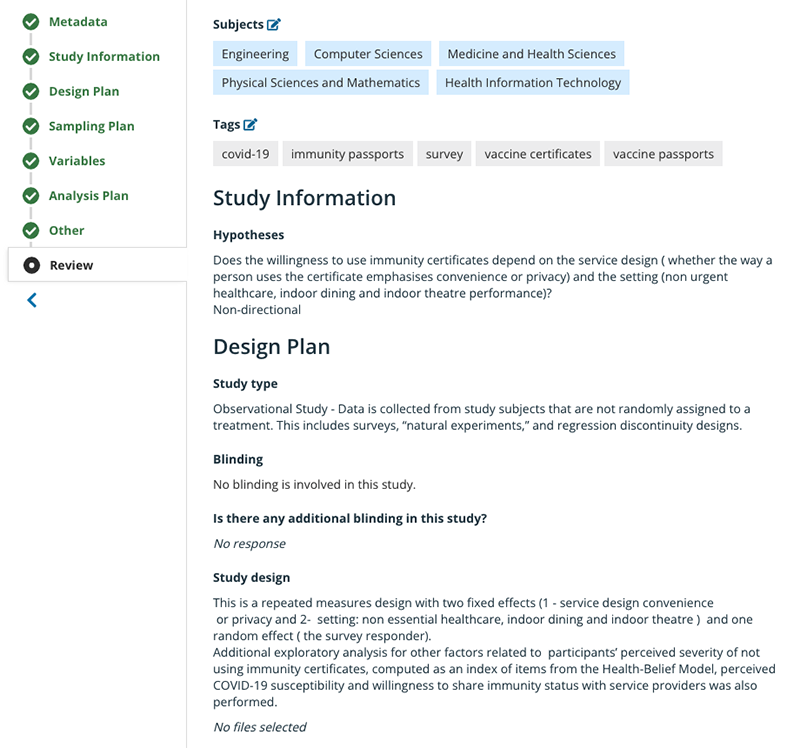

flowchart TD
D("- Set up GitHub repo
- Set repo as private
- Add collaborators")
F("- Set up an OSF repository
- Set project as private
- Add collaborators and their ORCIDs")
A(Pre-register statistical analysis plan?) -- Yes --> B(Complete pre-registration through, e.g., Open Science Framework) --> C(Does your research involve writing lots of code?) -- Yes --> D --> E(Do you plan to share data and other research material?) -- Yes --> F --> G(Research project is finished and ready to submit to journal or conference)
A -- No --> C -- No --> E -- No --> G
G --> H(Have you used repos?) -- Yes --> I(Change repo settings - GitHub and/or OSF - to public) --> J(Does publication permit sharing manuscripts to pre-print servers?) -- Yes --> K(Submit to pre-print server) --> L(Does publication require anonymous link to OSF repo for double-blind review?) -- Yes --> M(Generate anonymous link and add to submission) --> N(Submit your work)
H -- No --> J -- No --> L -- No --> N
Open science is about making your research freely accessible to others. This includes your data, your code and any outputs (such as reports or articles).
Many people in research, or working or studying in higher education, will be familiar with open science as a concept. As a lecturer, I was aware of it and frequently made use of open data for teaching and research, but it was not until it became a requirement from my funder that I took the opportunity to run my own research as open science by design.
Most tools that I was already familiar with could be used to support open science, but I soon realised that there were some steps and planning that I first needed to learn. As I discovered more about the processes and principles of open science, I came to see that making my research open would not require much additional time and effort. However, I felt that a succinct guide to open science would certainly help me – and others – to make the transition more easily. So, I set out to write such a guide.
This is the result! It is not meant to be an exhaustive document. Rather, I will explain the route I took to open science and what options are out there for others looking to follow suit.
What is open science?
“Open science refers to the process of making the content and process of producing evidence and claims transparent and accessible to others” (Munafò et al. 2017). The open science principles are:
- Open source
- Any data, code or output is accessible and usable in software that is freely available and with an open license. What this means in practice is that, for example, when sharing data, the .csv format is used rather than .xlsx, as the latter requires closed source software (Microsoft Excel) to run.
- Open data
- Research data should be freely accessible. One approach to open data is to adhere to the FAIR Data Principles (Wilkinson et al. 2016). FAIR stands for Findable, Accessible, Interoperable, and Reusable, and these principles can be implemented as a step to help make your work open science. However, they are not the only way, nor are they a guarantee that your work will automatically meet the definition of “open science” if you implement them.
- Open access
- Access to published papers and/or outputs is freely available to all. This can be achieved, for example, by sharing published papers in a pre-print server.
What is a pre-print server?
One additional benefit of open science is that it supports reproducible research. This means that others can download your data and code, re-run the analysis, and see if they obtain the same results. To get the full benefit of open science and promote reproducibility, code needs to be written with enough explanations or comments to help others understand the logic of the various stages of an analysis.
Steps to open science
In this section, I will outline steps you can take to easily make your research open science. There will be situations where it is not possible to make all aspects of research open – for example, due to privacy and consent issues related to data. It is still possible to share some elements of such projects, but potentially this involves additional work – to create suitable demo data, say, or generate synthetic data in order to provide data that has comparable trends but preserves privacy. It may also be possible to share the data when it is requested on a case-by-case basis. I am not going to cover this here, but it is worth considering whether open science is possible in each case.
Before you begin…
Pre-registering an analysis plan for your research helps establish that your research is confirmatory (hypothesis testing) rather than exploratory (hypothesis generating). If you have some hypotheses or research questions that are the foundation of your research, it is worth pre-registering. If your research is exploratory, pre-registration is not necessarily applicable. Although pre-registration in itself is not a requirement for open science, the process of pre-registration can all be completed within repositories such as the Open Science Framework (OSF). Pre-registering your analysis plan will add value and rigour to you research.
If your research doesn’t require pre-registration, jump straight to Step 1.
What is pre-registration?
Pre-registration involves completing a form before you start your analysis to explain the primary research questions, the covariates of interest, and the methods you plan to use and why. Haroz (2022) provides more detail on how apps like OSF, Zenodo and Figshare support pre-registration. This video also gives more details.
Below is an example of a pre-registration.

Step 1
Does your research plan require you to write a lot of code for analysis purposes, perhaps in collaboration with others? If the answer is No, skip to Step 2. If Yes:
- Consider setting up a GitHub repository (or repo), especially if this is a collaborative project and it is likely that more than one person will be working on the code. Don’t forget to invite your collaborators to join the repo!
- GitHub repos can be set to private and then made public at the appropriate time, so development work can take place behind closed doors and then released to the wider world when ready.
- Ensure that your code is commented properly so that it is reusable and, eventually, your results are reproducible.
Step 2
GitHub is a great tool for developing code collaboratively, but it may not be right for you – or indeed the only tool to use – if you have a lot of other material to work with and release as part of your research project. If that’s the case:
Set up an area for your project on an open science repository such as OSF, Zenodo or Figshare. (If you use OSF then setting up an OSF repository is quick and easy – head to osf.io. OSF allows many integrations, including to GitHub, through the use of add-ons.)
You can start by setting your repository as private and then make it public at the appropriate time.
Upload all project files, and don’t forget to invite your collaborators.
Add ORCIDs for every team member.
What is an ORCID?
An ORCID is a persistent digital identifier that you own and control. It allows you to connect your ID with your professional information – affiliations, grants, publications, peer reviews, and more. You can set one up at orcid.org.
Step 3
If you are ready to submit your research to a journal or conference, consider the following steps before you submit:
- Check that there is enough information in GitHub (if using) and OSF (if using) about the project. This should include instructions for someone to be able to access your files, use the data and run the code.
- Make the GitHub and/or OSF repositories publicly visible.
- If submitting to a journal that requires anonymous links, generate them and copy them into the manuscript. (In OSF, for example, it is possible to create anonymous links to your repository in case of double-blind submission requirements.)
- Share a copy of your manuscript on a pre-print server – but don’t forget to check the journal or conference policy on pre-prints before you do!
Apps and websites to support open science
This is by no means a complete list but instead features the apps and websites that are commonly used when research projects include data and code.
Open Science Framework (OSF)
OSF is a free web app that supports researchers with sharing, archiving, registration and collaboration. The Open Science Framework website is worth checking out and includes a guide to help users get started. Once a project is public in the OSF it will have a DOI and a permanent link, so it can be cited. OSF can also support the tracking of versions of your file. One drawback can be that there is a limit on the maximum size of file that can be uploaded.

Sample OSF repository.
Zenodo
Another general purpose open repository. As with Figshare, Zenodo also provides a DOI.
GitHub
GitHub is a web app that offers distributed version control. It is very commonly used for software development, especially when there are multiple developers. Although you can share code and many file types through GitHub, accessing and collaborating on projects can be a daunting experience for those who are not familiar with the way GitHub works. Also, GitHub is not always required as it is possible to share your code through OSF, for example. If you want to know more about using GitHub in support of open science and reproducibility, read “The road to reproducible research”.
Example: my own route to open science
In my case, my project did not involve a heavy amount of coding or a large number of researchers, so I opted to use OSF to store the ethics approval documents, the survey questions (which drove the data collection), the data in .csv format, and the outputs. I also then linked this to Figshare from my institution and published the article on MedRxiv at the same time as I submitted it to a journal for review. The paper was eventually published in BMJ Open. The steps I took in this case were sufficient for the work to be recognised as embracing open science principles.
Plot your own route to open science
In summary…
To make your research open science, you need to:
- Make any data you collect or generate available to download and reuse.
- Pre-register your statistical analysis plan.*
- Make your code available for download, and document it clearly so others can reuse it.
- Make any supporting material and outputs available for download in formats that are open source.
- If publishing to a journal or conference, share manuscripts in a pre-print server.*
* May not be relevant or applicable, depending on the nature of your work.
- About the author
-
Isabel Sassoon is a senior lecturer in computer science and data science at Brunel University London and a member of the Real World Data Science editorial board.
- Copyright and licence
-
© 2023 Isabel Sassoon

 This article is licensed under a Creative Commons Attribution 4.0 (CC BY 4.0) International licence Thumbnail photo by Basil James on Unsplash.
This article is licensed under a Creative Commons Attribution 4.0 (CC BY 4.0) International licence Thumbnail photo by Basil James on Unsplash.
- How to cite
-
Sassoon, Isabel. 2023. “How to ‘open science’: A brief guide to principles and practices.” Real World Data Science, November 6, 2023. URL
References
Haroz, Steve. 2022. “Comparison of Preregistration Platforms.” MetaArXiv. https://doi.org/10.31222/osf.io/zry2u.
Munafò, Marcus R., Brian A. Nosek, Dorothy V. M. Bishop, Katherine S. Button, Christopher D. Chambers, Nathalie Percie du Sert, Uri Simonsohn, Eric-Jan Wagenmakers, Jennifer J. Ware, and John Ioannidis. 2017. “A Manifesto for Reproducible Science.” Nature Human Behaviour 1 (1): 1–9.
Wilkinson, Mark D., Michel Dumontier, IJsbrand Jan Aalbersberg, Gabrielle Appleton, Myles Axton, Arie Baak, Niklas Blomberg, et al. 2016. “The FAIR Guiding Principles for Scientific Data Management and Stewardship.” Scientific Data 3 (1): 1–9.